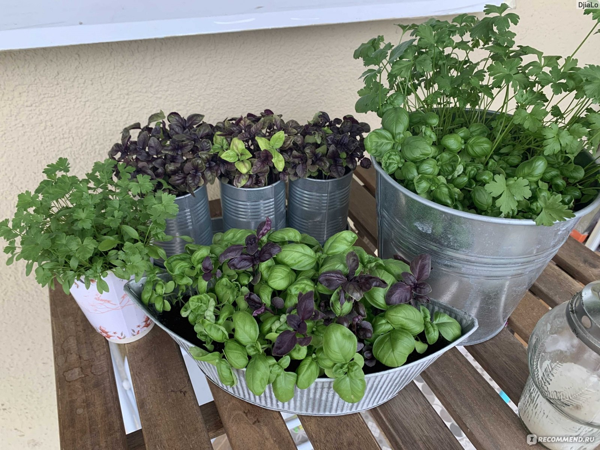
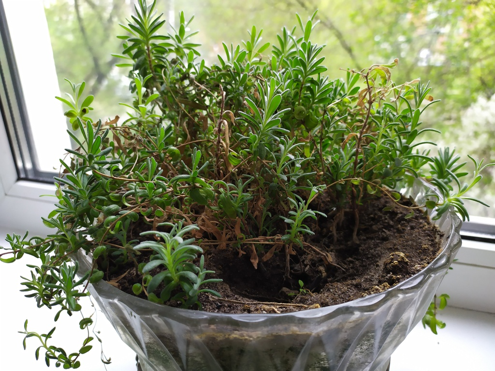
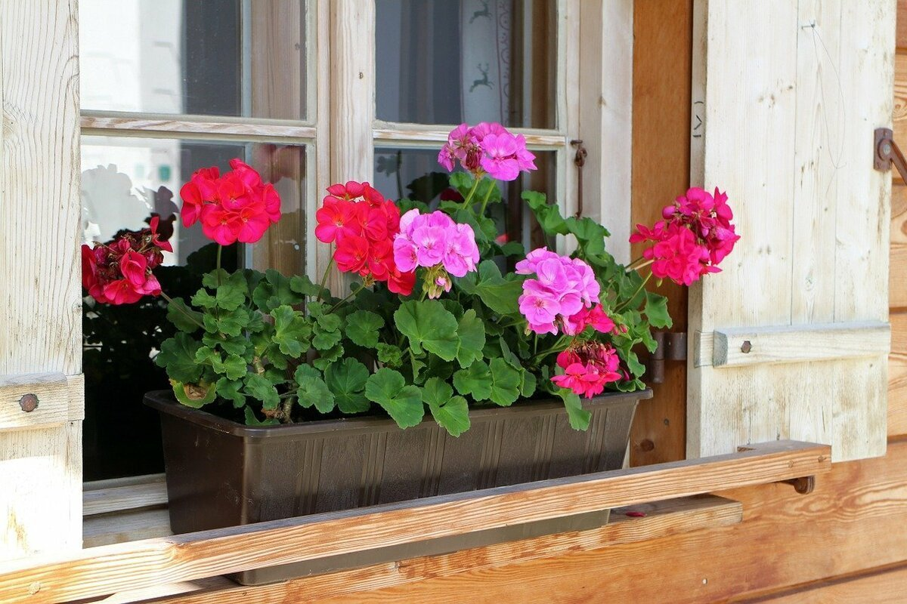
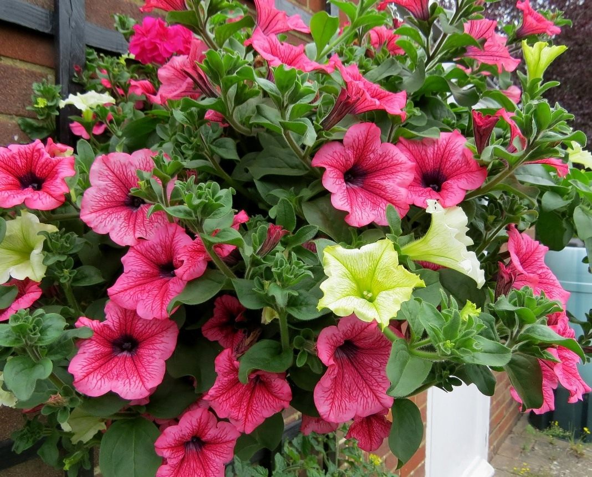
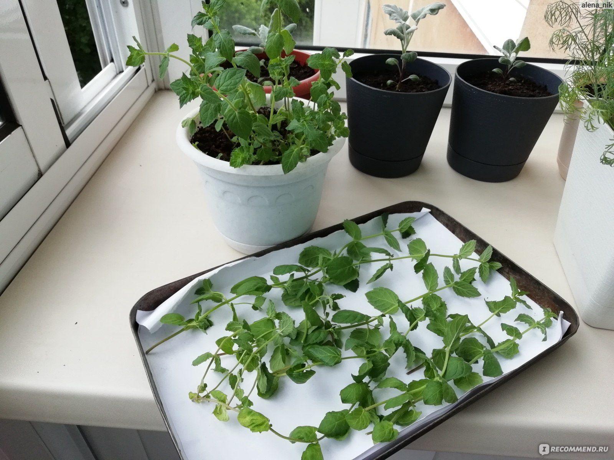
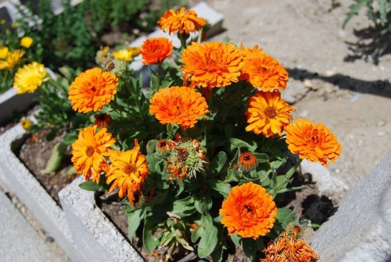

Популярные растения для балкона
Огурцы
Огурцы отлично подходят для выращивания на балконе. Любят много воды и солнце, быстро дают урожай. Идеальны для свежих салатов и закаток.

Помидоры черри
Компактные томаты черри популярны среди городских садоводов. Требуют яркого света и регулярного полива. Яркие плоды украсят любой балкон.
Базилик
Базилик — ароматное пряное растение, легко выращивается на солнечном балконе. Требует регулярного полива и рыхлой почвы. Отличный ингредиент для множества блюд.
Лаванда
Лаванда устойчива к засухе и жаре, придаёт оттенок прованса балкону. Предпочитает солнечные места и дренированную почву. Её аромат расслабляет и отпугивает насекомых.
Герань
Герань популярна благодаря яркому цветению и неприхотливости. Она любит солнце и регулярный полив. Украшает балкон с весны до осени.
Петуния
Петуния великолепна своими яркими цветами на протяжении всего лета. Нуждается в регулярном поливе и подкормках. Подходит для контейнерного садоводства.
Мята
Мята — ароматная трава с освежающим вкусом, выращивается легко. Быстро растёт и отлично подходит для чаёв. Требует умеренного полива и солнечных участков.
Календула
Календула притягивает внимание яркими оранжево-жёлтыми цветами. Легко выращивается, устойчива к большинству болезней. Используется и в декоративных, и в лечебных целях.